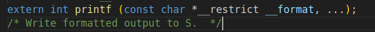
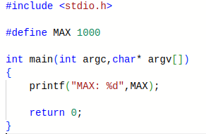

Agenda Part 1

- 计算机科学抽象思维
- C语言常量
- C中的控制流
- 函数
- 数组
- 字符串
- 宏定义与预处理
抽象是什么？能吃吗
- 抽象好比是一个黑箱，我们不需要知道中间发生的过程，只需要知道我输入了什么，我能输出什么，最简单的例子就是
printf。

编程本身就是一种抽象
- 我们使用的编程语言，比如C语言和Python，都是抽象，因为计算机只懂二进制。

抽象的力量
https://www.2048.org 这是一个2048 我们可以将其分解为以下几个模块
- 游戏板: board[BOARD_SIZE][BOARD_SZIE]
- 初始化: initialize_board
- 随机生成: generator_number
- 打印显示: print_board
- 读取移动指令: choose_direction
- 合并并移动: move_and_merge
- 判断游戏终止: is_finished
抽象的力量
run_game() {
initialize_board();
generator_number(); generator_number();
while (true) {
switch (choose_direction) {
case UP: move_and_merge_up();break;
case DOWN: move_and_merge_down();break;
case LEFT: move_and_merge_left();break;
case RIGHT:move_and_merge_right();break;
}
is_finished() ? break:;
generator_number();
print_board();
}
}
变量
typedef unsigned char uint8_t;
| 类型 | 描述 | 例子 |
|---|---|---|
| char | 8位，ASCII | ‘a’, ‘A’, ‘\n’, 12 |
| int | 整数值（正、负、0），>= 16 位，一般为32位 | 0, 78, -217, 0x2E |
| unsigned int | 整数值（正、0） | 0, 6, 35102 |
| short | 整数值（正、负、0），>= 16 位，一般为16位 | 0, -8, 32767 |
| long | 整数值（正、负、0），>= 32 位，一般为32位 | 0, 78, -217, 301713123194 |
Const 常量
const int integer = 100;
const double dob = 1.20;
const char MyChar = 'c';
- 常量一经分配，无法更改。可以尝试添加
integer = 120;看看会发生什么。
#include <stdio.h>
int main(int argc,char* argv[]) {
const int intager = 100;
const double dob = 1.20;
const char MyChar = 'c';
// 你可以在此处添加代码
printf("intager:%d\ndob:%lf\nMyChar:%c\n",
intager,dob,MyChar);
return 0;
}
C中的控制流
-
语句(statement)可以是代码块 {} 或只是一个独立的语句
- if-else
if (expr) statementif (x == 0) y++;if (x == 0) {y++;}if (x == 0) {y++; j = j + y;}if (expr) statement1 else statement2- switch case
- while:
while (expr) statement - for:
for (initialize; check; update) statement
函数
- 在编程中，函数是一段可重复使用的代码块，用于执行特定的任务或完成特定的操作。函数可以接受输入参数，并且可以返回一个值或执行一些操作
- 代码重用
- 提高代码可读性
- 提高代码可测试性（单元测试）
- 抽象
数组
- 数组就是一整块变量的集合，数组名是数组存放的地址，使用索引确定每个元素的位置
- 定义：unsigned char temp[10] = {0x11,0x12,0x13};
- 使用：printf(“%02x ”,temp[0]);
https://godbolt.org/z/rzo6o1bsE
#include <stdio.h>
int main(){
unsigned char temp[10] = {0x11,0x15,0x22};
printf("temp address: %p\n",temp);
temp[3] = 0xa8;
for (size_t i=0;i<10;i++) printf("%02x ",temp[i]);
printf("\n");
return 0;
}
字符串
- 字符串是一种特殊的数组，以
'\0'结束。 - 使用
<string.h>标准库进行更多操作。
https://godbolt.org/z/3jrrvchE1
#include <stdio.h>
#include <string.h>
// 字符串以\0结尾
int main(){
char str1[] = "I Can Eat Glass";
char str2[20] = "I Can Eat Glass";
printf("str1:%s\nsize:%lu\nstr2:%s\nsize:%lu\n",\
str1,strlen(str1),str2,strlen(str2));
}
使用sizeof和strlen都能获取字符串长度,它们有什么区别呢?
宏定义
#define是文本替换，比如#define MAX 1000- C预处理器先处理源文件，替换宏并包含文件。

https://godbolt.org/z/aMPxbrMbs
gcc -o test test.c -save-temps
关于这块，比较好玩的就是微软早期路径长度在编写时使用了宏定义
#define MAX_PATH 260
导致最长路径除了”C:\”之外，只能有255个字符来指代路径了，虽然现在支持在注册表里面进行更改，不过会引发一些神奇的小bug，这个就留给大家进行探索了
预处理
C 源文件在编译器看到代码之前首先经过预处理器 CPP
CPP 用单个空格替换注释
CPP 命令以“#”开头
- #include "file.h" / 将 file.h 插入到文件 /
- #include
使用 gcc 的 –save-temps 选项查看预处理结果 完整文档位于：http:// /gcc.gnu.org/onlinedocs/cpp/
Cat Break!
Agenda Part 2
- 内存与变量
- 多维数组
- 指针的初步介绍
- 指针的进一步理解
- 指针与数组
- 指针与const
- void指针
- 警惕UB
内存
变量与垃圾值
unsigned int a = 1;
int b = -1;
float c = 1.5f;
变量可以被分为四个部分： int ：类型 b ：标识 -1 ：值 &b ：地址
数组的越界行为
int array[5] = { 1, 2, 3, 4, 5 };
array 这个标识符是什么呢？
问：能不能访问array[5]呢？
多维数组(目前了解即可)
int array[2][2] = {{1,2},{3,4}};
matrix的类型: int[2][2] sizeof matrix = sizeof(int) * 2 * 2
https://godbolt.org/z/Mbq513KnG
(问：下面哪种写法是正确的?)
int matrix[][2] = {1,2,3,4};
int matrix[2][] = {1,2,3,4};
指针
指针也可以看作一个变量，我们对其的定义是这样的
int a = 1;
int* p = &a;
int : int表示指针指向的元素类型 代表的是我要定义一个指针 p : 标识符 &a : 指针的值（指针指向的地址） &p : 存放指针的地址
指针初始化与使用
int* p;
*p = 1; // 危险，p是野指针
应该这么做
int* p = NULL;
当要使用指针指向的值的时候，可以对指针进行解引用
int a = 1;
int* p = &a;
*p = 2;
printf("%d",*p);
数组和指针的关系
// p1的类型是int* , array的类型是int[10]
int array[10];
int *p1 = array;
// p2的类型是int*[2] , matrix的类型是int[][]
int matrix[2][2];
int (*p2)[2] = matrix;
数组与其元素类型的指针存在隐式转换，指向数组首元素的指针可通过数组类型表达式初始化。
问：二维数组可以和二维指针相互转化吗
int array[2][2];
int** ptr = array;
//可以这么做吗
const与指针的关系
前文提到const就像一把锁，被它锁到的事物不能被更改
int a;
// 锁住指针p指向的int类型变量
const int *p = &a;
// 锁住指针本身，但指针指向的元素可以修改
int const *p = &a;
// 一起锁
const int const *p = &a;
假设你有一段音频文件，你想要进行播放，那你绝对不想播放器修改你的音频，那你可以使用const来设计函数，这样就绝对无法更改了
void wav_player(const int *ptr);
指针的加减法
加、减 加、减整数n -> 指向后/前第n个元素
指针相减 表示指针之间的偏移量
仅当原指针和结果指针都指向同一数组中的元素，或该数组的尾后一位置，行为才有定义。
警惕UB(未定义行为)
我们很多时候需要警惕未定义行为，就比如说
a[i] = ++i +1;
i在这里多次使用且数值发生了改变，没人知道a[i]先执行还是++i先执行
// i=0
int a = f(i++)+f(i++)-f(i++);
虽然在最后的结果上编译器会将其翻译为int a = (f(i++)+f(i++))-f(i++); 但没人知道哪个f(i++)最先执行，可能是第一个，也可能是第三个
详情请参考 https://zh.cppreference.com/w/c/language/behavior https://zh.cppreference.com/w/c/language/eval_order